Decoding CAPTCHAs
August 2017
There are two types of CAPTCHAs. Those that are solved by bots and those that will eventually be solved by bots.
It's hard to tell if a CAPTCHA is secured or not. But, if the text-based CAPTCHA on your website can be decoded with two lines of code (as shown in this article), it's time to upgrade it.
Approach
Two-line approach:
-
Preprocess the image with
convert(ImageMagick). -
Use Tesseract - an OCR engine - to extract the text from the image.
Quick tutorial on convert
convert is a program to edit images. It takes an input image,
applies transformations (a list of commands) on it and writes the
result to a file.
Its syntax is:
$ convert <input_image> [<commands>...] <output_image>
Example:
$ convert rose.jpg -negate rose-1.jpg
-
Input image is
rose.jpg:
-
-negatereverses its pixels -
Output image is
rose-1.jpg: 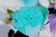
We can also apply multiple transformations.
Example:
$ convert rose.jpg -negate -resize 150% rose-2.jpg
This negates the pixels, then it resizes the image to 150% of its original size.
rose-2.jpg:
The commands (-negate, -resize 150%) are applied in order by
convert. In that case, the order doesn't matter as it will output
the same image if we swap the two commands. But, keep that in mind
when you do complex transformations.
Quick tutorial on tesseract
tesseract is straightforward to use. You provide an image and it
ouputs the text in the image.
Its syntax is:
$ tesseract [<options>...] <image> <output_file/stdout>
Example:
$ tesseract hello-world.png -
Hello Word
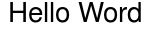
It outputs the text from image hello-world.png to stdout.
One useful option of tesseract is -psm. It tells tesseract what
kind of image to expect. In case of CAPTCHAs, it is usually a single
text line or a single word. So you can set -psm 7 (treat the image
as a single text line) or -psm 8 (treat the image as a single word).
Example:
$ tesseract -psm 7 hello-world.png -
Hello Word
Enough theory, let's now decode some CAPTCHAs.
CAPTCHA 1
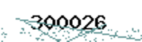
The weakness in this CAPTCHA is that the text is in black and the noise (lines and dots) is non-black. So we only need to keep the black pixels and change all other pixels to white.
First, we convert the image to gray:
$ convert 300026.png -colorspace gray 300026-1.png
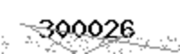
Then, we convert it to black and white (binary):
$ convert 300026.png -colorspace gray -threshold 50% 300026-2.png
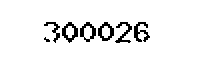
-threshold 50% means any pixels whose color is equal or above 50%
white (middle gray) are changed to white. The other pixels are changed
to black. In other words, light gray pixels are changed to white and
dark gray pixels are changed to black.
Since the noise pixels are light gray, they are changed to white. So they "disappear" from the image.
By default, -threshold <value> will grayscale the image before
thresholding it. So the command above can be rewritten as convert 300026.png -threshold 50% 300026-2.png.
Finally, we decode it:
$ tesseract 300026-1.png -
300026
CAPTCHA 2
Source: https://www.imagemagick.org/discourse-server/viewtopic.php?f=22&p=147516
The strategy for this CAPTCHA is to remove the borders. We will remove them with the floodfill option.
We convert the image to black and white:
$ convert augu.jpg -threshold 50% augu-1.jpg
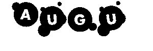
Then, we remove the borders:
$ convert augu.jpg -threshold 50% -fill black -draw "color 0,0 floodfill" augu-2.jpg
But that's not enough for tesseract:
$ tesseract augu-2.jpg -
Ausu
We will help tesseract by specifying that the possible characters
are only upper case letters:
$ tesseract -c tessedit_char_whitelist=ABCDEFGHIJKLMOPQRSTUVWXYZ augu-2.jpg -
AUGU
CAPTCHA 3
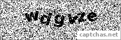
We blur the image to reduce the noise:
$ convert wdgvze.png -gaussian-blur 0 wdgvze-1.png
Then, we convert it to black and white:
$ convert wdgvze.png -gaussian-blur 0 -threshold 25% wdgvze-2.png
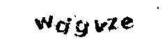
Finally, we replace each pixel by the most frequent colors around it
with -paint 1:
$ convert wdgvze.png -gaussian-blur 0 -threshold 25% -paint 1 wdgvze-3.png
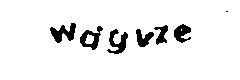
$ tesseract wdgvze-3.png -
wdgvze
CAPTCHA 4
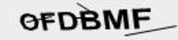
Source: https://gist.github.com/chroman/5679049
We erode the image:
$ convert ofdbmf.jpg -negate -morphology erode octagon:2 -negate ofdbmf-1.jpg
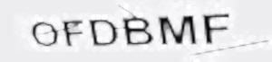
Morphology is an operator that applies a function on each pixel (e.g. erode) based on the neighborhood of that pixel (e.g. octagon). Since morphology works on white on black images (ours is black on white), we negate the image before eroding it, then we negate it again to get back our original colors.
Then, we convert it to black and white:
$ convert ofdbmf.jpg -negate -morphology erode octagon:2 -negate -threshold 70% ofdbmf-2.jpg
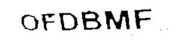
$ tesseract -psm 8 ofdbmf-2.jpg -
OFDBMF
Like this article? Get notified of new ones: